Setting up SDL 2 on Linux Android Studio 3.0.1
Last Updated 12/26/17
1) Get ready to download. A lot. Like over a gigabyte of data. If you have a limited connection, I'm sorry the android SDK is huge and it's just the way things are. I recommend having a
movie or TV show to watch ready if a gigabyte takes a long time for you to download.
First you need to install the Java Development Kit (JDK). Using apt-get you can install it using the following command:
2) Download Android Studio on this page.
3) Download the SDL2 source. Not just the development libraries you use for desktop development, the full source. You can find the full source on this page.
4) To run on an Android device we're going to need the Android Debug Bridge (known as ADB). You can install it with apt-get using:
After it's extracted, install and/or run Android Studio. Instructions on how to do so should be at ~/android-studio/Install-Linux-tar.txt
6) After starting Android Studio, go to Configure -> SDK Manager
7) Under SDK Platforms, check Show Package Details and select Android SDK Platform 16 for installation and hit apply to install:
You may want to install the latest version of the Android SDK but unless you know what you're doing and you actually need the latest features I would recommend against it. Newer SDK means less stable SDK.
8) Click on SDK Tools and make sure to install:
9) Extract the SDL2 source code to some accessible directory that is ideally dedicated to containing Android libraries. For this tutorial we will put them in the directory "~/androidlib/". After extracting the SDL2 source code you should have an Android makefile at "~/androidlib/SDL2-2.0.7/Android.mk". Depending on your version of SDL, it could be at "~/androidlib/SDL2-2.0.5/Android.mk" or "~/androidlib/SDL2-2.0.4/Android.mk" and so on.
10) Start up Android Studio again and import the android project from the SDL2 source code which should be at "~/androidlib/SDL2-2.0.7/android-project"
11) Set the destination to a new folder inside of some accessible directory that is ideally dedicated to containing Android projects. For this tutorial we will put the project in "YOUR-HOME-DIRECTORY/androidprojects/SDL_Tutorial". Select the directory and import the project with the default settings.
12) Go to Build -> Make Project:
You will get an error that says:
Select app under Modules and the set the Source/Target Compatibility to the latest version (currently 1.8):
Build again and you should get a new error.
14) If you try to hit Build -> Make Project you'll get the following error:
Let's back up a bit and talk about how SDL 2 on Android works. Android development is mostly Java based and SDL is a C based library. The Native Development Kit that allows Java to interface with native C/C++ code using the Java Native Interface. With the NDK, we'll build SDL2 as a shared object that will interface with Java, and we'll build our game as another shared object that will interface with SDL 2.
What we need to do is tell Gradle (the build tool used by Android Studio) to use the Android make file for our project. Open up the project window, right click on app and select "Link C++ with Gradle".
Set the Build System to ndk-build and set the project path to point to the Android make file which should be at "~/androidprojects/SDL_Tutorial/app/src/main/jni/Android.mk".
Go to the JNI directory inside the project using this command:
16) That Gradle error didn't tell us much so we'll have to open up the Gradle console:
17) The error
18) Open "~/androidprojects/SDL_Tutorial/app/src/main/res/values/strings.xml" and change
19) At this point the app will run our code but it will fail because it can't load the media files for the tutorial. Media files go in the assets directory. Create a folder called "assets" at "~/androidprojects/SDL_Tutorial/app/src/main/assets". Copy the directory inside of the zip we downloaded and place it in the assets directory. If the application needs to open "52_hello_mobile/hello.bmp", it needs to be at "~/androidprojects/SDL_Tutorial/app/src/main/assets/52_hello_mobile/hello.bmp" when building.
20) Our SDL application is ready to build and run, but first we need to set up our device. You can use an Android emulator, but the emulator is can be really, really slow so I recommend getting an Android device if you can.
First you'll need to enable USB debugging on your device. That is version/device specific which is why I won't go over it here. Google search "android enable usb debugging" with your device name and they'll show you how to do it.
After you set up your Android device, go to Run -> run App.
If you want to see the console output of the app, you can see it in the Android Monitor:
Now that you have SDL 2 running on your device, it's time to go onto part 2 of the tutorial.
First you need to install the Java Development Kit (JDK). Using apt-get you can install it using the following command:
sudo apt-get install default-jdk
2) Download Android Studio on this page.
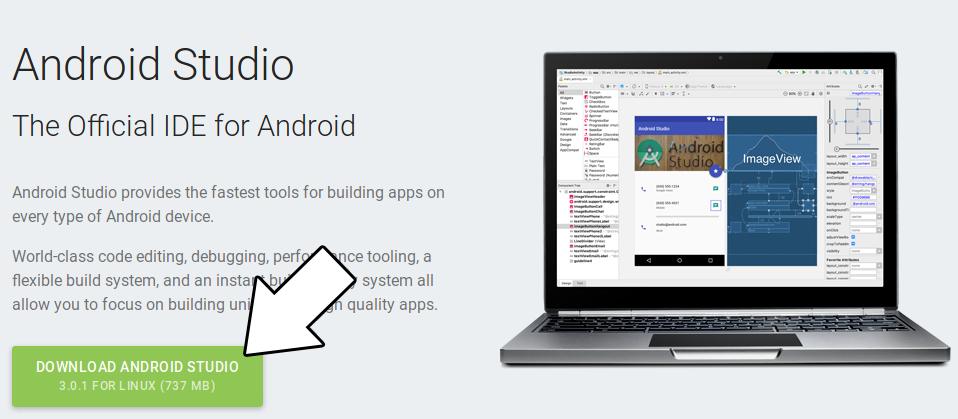
3) Download the SDL2 source. Not just the development libraries you use for desktop development, the full source. You can find the full source on this page.
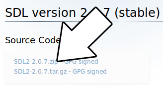
4) To run on an Android device we're going to need the Android Debug Bridge (known as ADB). You can install it with apt-get using:
sudo apt-get install android-tools-adb
5) Extract the android-studio folder from the Android Studio zip we downloaded earlier. Put it some place convenient. For this tutorial we will be putting it inside of the home directory.After it's extracted, install and/or run Android Studio. Instructions on how to do so should be at ~/android-studio/Install-Linux-tar.txt
6) After starting Android Studio, go to Configure -> SDK Manager
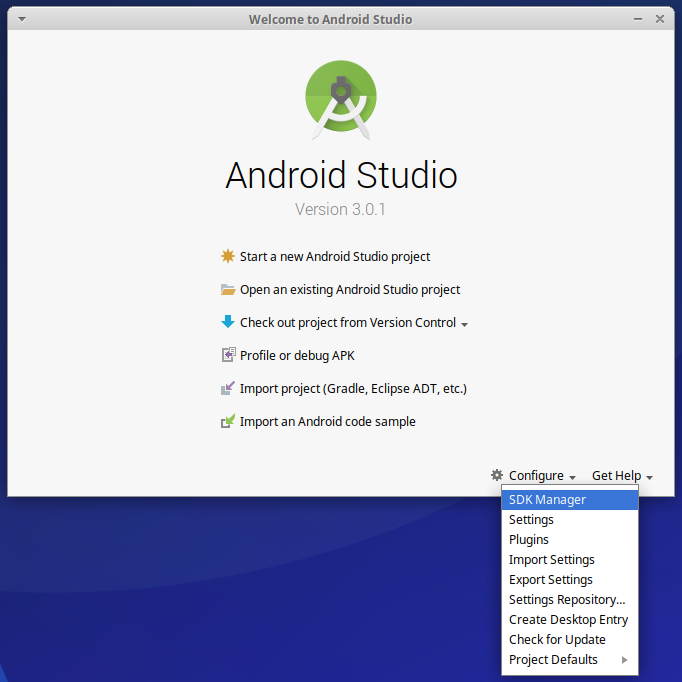
7) Under SDK Platforms, check Show Package Details and select Android SDK Platform 16 for installation and hit apply to install:
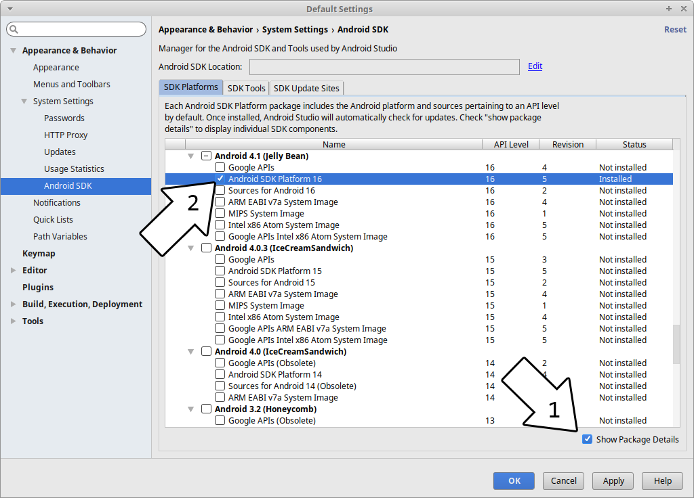
You may want to install the latest version of the Android SDK but unless you know what you're doing and you actually need the latest features I would recommend against it. Newer SDK means less stable SDK.
8) Click on SDK Tools and make sure to install:
- CMake
- NDK
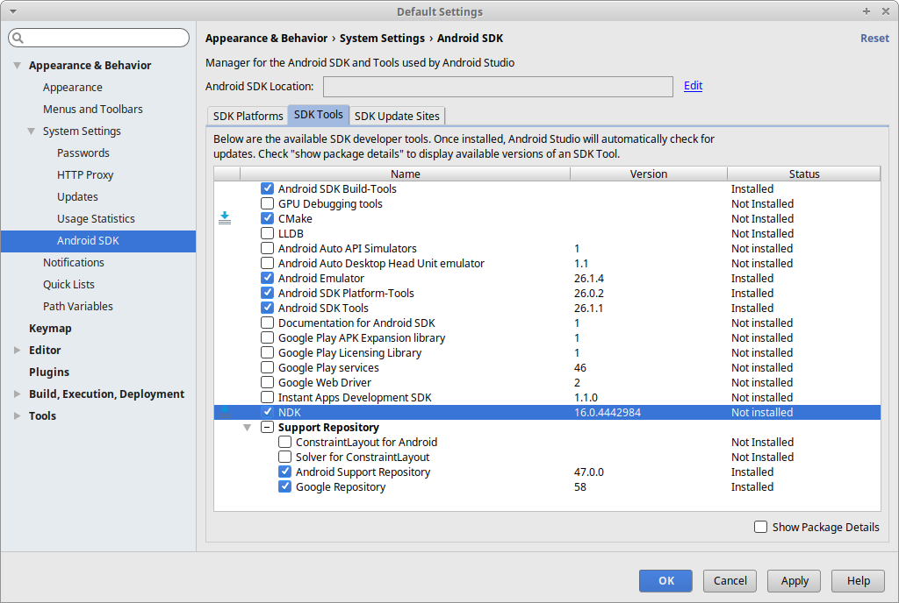
9) Extract the SDL2 source code to some accessible directory that is ideally dedicated to containing Android libraries. For this tutorial we will put them in the directory "~/androidlib/". After extracting the SDL2 source code you should have an Android makefile at "~/androidlib/SDL2-2.0.7/Android.mk". Depending on your version of SDL, it could be at "~/androidlib/SDL2-2.0.5/Android.mk" or "~/androidlib/SDL2-2.0.4/Android.mk" and so on.
10) Start up Android Studio again and import the android project from the SDL2 source code which should be at "~/androidlib/SDL2-2.0.7/android-project"
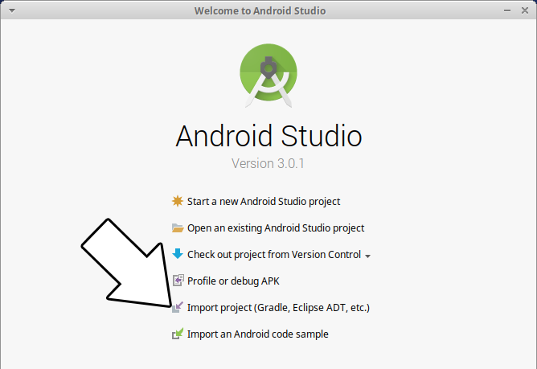
11) Set the destination to a new folder inside of some accessible directory that is ideally dedicated to containing Android projects. For this tutorial we will put the project in "YOUR-HOME-DIRECTORY/androidprojects/SDL_Tutorial". Select the directory and import the project with the default settings.
12) Go to Build -> Make Project:
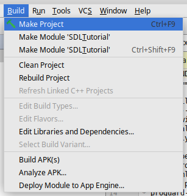
You will get an error that says:
Minimum supported Gradle version is 4.1. Current version is 2.14.1.
This means our project is set to use the wrong version of Gradle. To fix this, set the Project window to project mode, go to SDL_tutorial -> gradle -> wrapper -> gradle-wrapper.properties and changedistributionUrl=https\://services.gradle.org/distributions/gradle-2.14.1-all.zip
todistributionUrl=https\://services.gradle.org/distributions/gradle-4.1-all.zip
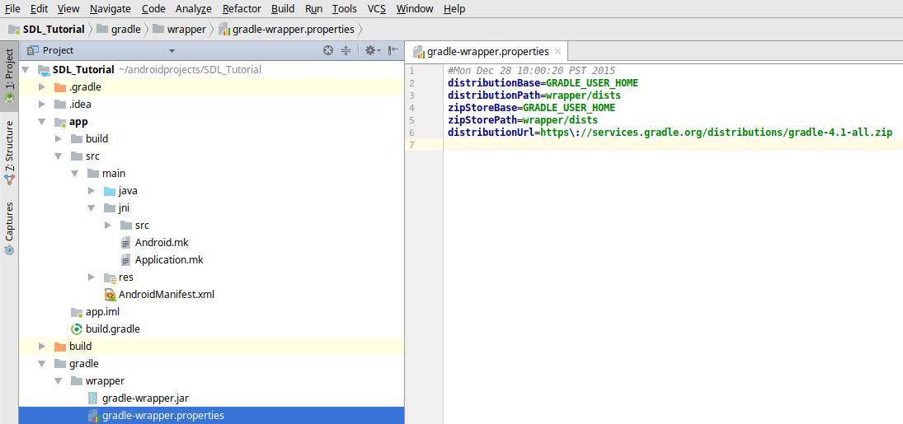
Make project again (it may take a while to download Gradle 4.1) and you'll get a new error:
cannot find symbol class Objects
13) That error was due to the fact that Android Studio cannot find the Java Objects class. It can't find it because it is pointed at an old JDK. To make sure it compiles against the latest version of Java, go to File -> Project Structure.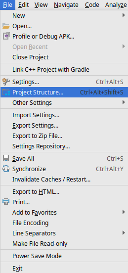
Select app under Modules and the set the Source/Target Compatibility to the latest version (currently 1.8):
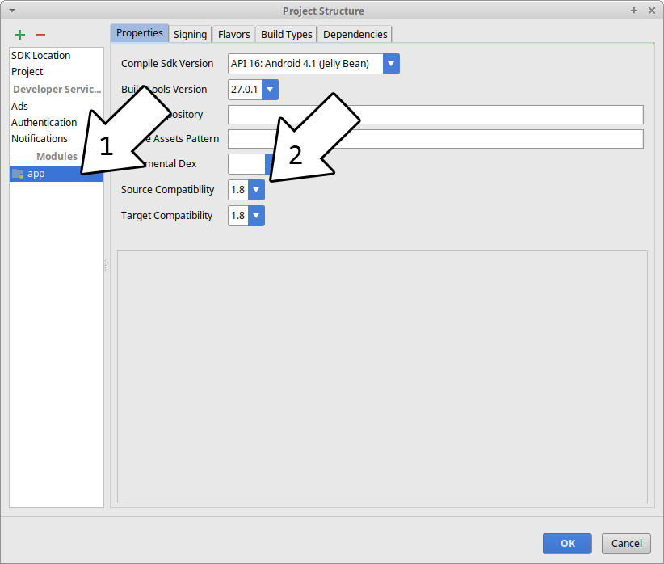
Build again and you should get a new error.
14) If you try to hit Build -> Make Project you'll get the following error:
Error:Execution failed for task ':app:compileDebugNdk'. > Error: Your project contains C++ files but it is not using a supported native build system. Consider using CMake or ndk-build integration with the stable Android Gradle plugin: https://developer.android.com/studio/projects/add-native-code.html or use the experimental plugin: https://developer.android.com/studio/build/experimental-plugin.html.
This is complaining that the NDK setup is broken for our project.Let's back up a bit and talk about how SDL 2 on Android works. Android development is mostly Java based and SDL is a C based library. The Native Development Kit that allows Java to interface with native C/C++ code using the Java Native Interface. With the NDK, we'll build SDL2 as a shared object that will interface with Java, and we'll build our game as another shared object that will interface with SDL 2.
What we need to do is tell Gradle (the build tool used by Android Studio) to use the Android make file for our project. Open up the project window, right click on app and select "Link C++ with Gradle".
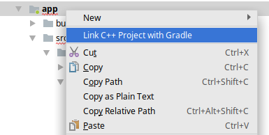
Set the Build System to ndk-build and set the project path to point to the Android make file which should be at "~/androidprojects/SDL_Tutorial/app/src/main/jni/Android.mk".
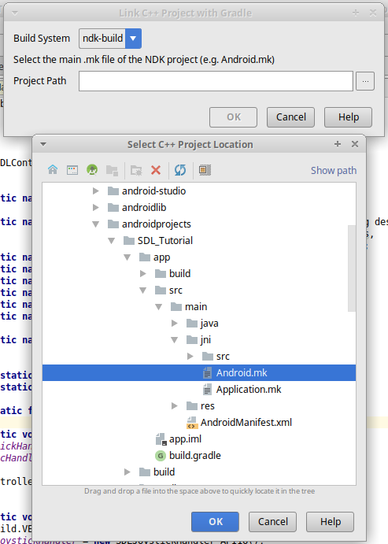
Hit Build -> Make Project and you'll get a bunch of new errors saying something like
Android NDK: Module main depends on undefined modules: SDL2
15) What the previous error was complaining about was that it can't find the SDL 2 module. What we need to do is set up a symbolic link to the SDL 2 source we extracted.Go to the JNI directory inside the project using this command:
cd ~/androidprojects/SDL_Tutorial/app/src/main/jni
And create a symbolic link directory to the SDL 2 source directory we extracted (REMEMBER: This path will vary depending on your version of SDL 2):ln -s ~/androidlib/SDL2-2.0.7/ SDL2
Try to rebuild the project. You'll new a new error but at least now you'll see symbolic link in the project: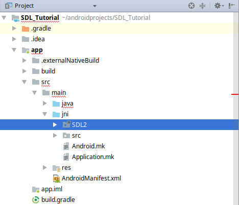
16) That Gradle error didn't tell us much so we'll have to open up the Gradle console:
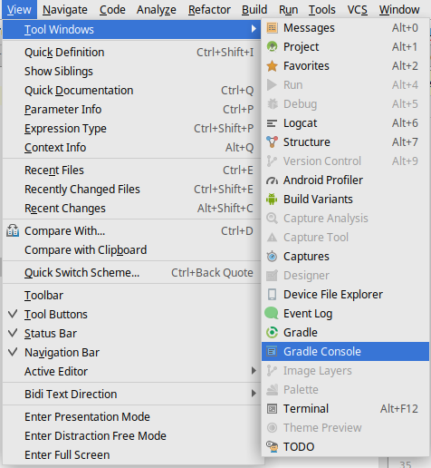
Scroll up a bit and you'll see some errors from the ndk-build. You'll probably see this error:
make: *** No rule to make target `~/androidprojects/SDL_Tutorial/app/src/main/jni/src/YourSourceHere.c', needed by `~/androidprojects/SDL_Tutorial/app/build/intermediates/ndkBuild/debug/obj/local/armeabi-v7a/objs-debug/main/YourSourceHere.o'. Stop. make: *** No rule to make target `~/androidprojects/SDL_Tutorial/app/src/main/jni/src/YourSourceHere.c', needed by `~/androidprojects/SDL_Tutorial/app/build/intermediates/ndkBuild/debug/obj/local/x86/objs-debug/main/YourSourceHere.o'. Stop.
In this case, the error "No rule to make target" actually means it can't find the file you're asking to compile. It's trying to compile "~/androidprojects/SDL_Tutorial/app/src/main/jni/src/YourSourceHere.c" but can't find it which makes sense because it doesn't exist. YourSourceHere.c is a place holder for our application source file so we need to replace it with ours. Download the source for lesson 52 and place 52_hello_mobile.cpp at "~/androidprojects/SDL_Tutorial/app/src/main/jni/src/52_hello_mobile.cpp". Open up "~/androidprojects/SDL_Tutorial/app/src/main/jni/src/Android.mk" and change "YourSourceHere.c" to "52_hello_mobile.cpp". Build and you should get a new error in the Gradle build menu.17) The error
fatal error: 'string' file not found
is due to the fact that the project is not set up to us the standard C++ library. To fix this, open up "~/androidprojects/SDL_Tutorial/app/src/main/jni/Application.mk" and change# APP_STL := stlport_static
toAPP_STL := stlport_static
so it's no longer commmented out. Build again and you should get no errors.18) Open "~/androidprojects/SDL_Tutorial/app/src/main/res/values/strings.xml" and change
<string name="app_name">SDL App</string>
to<string name="app_name">SDL Tutorial</string>
This will change the name under the App's icon from "SDL App" to "SDL Tutorial".19) At this point the app will run our code but it will fail because it can't load the media files for the tutorial. Media files go in the assets directory. Create a folder called "assets" at "~/androidprojects/SDL_Tutorial/app/src/main/assets". Copy the directory inside of the zip we downloaded and place it in the assets directory. If the application needs to open "52_hello_mobile/hello.bmp", it needs to be at "~/androidprojects/SDL_Tutorial/app/src/main/assets/52_hello_mobile/hello.bmp" when building.
20) Our SDL application is ready to build and run, but first we need to set up our device. You can use an Android emulator, but the emulator is can be really, really slow so I recommend getting an Android device if you can.
First you'll need to enable USB debugging on your device. That is version/device specific which is why I won't go over it here. Google search "android enable usb debugging" with your device name and they'll show you how to do it.
After you set up your Android device, go to Run -> run App.
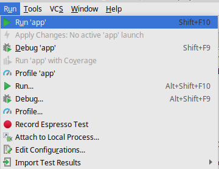
If you want to see the console output of the app, you can see it in the Android Monitor:
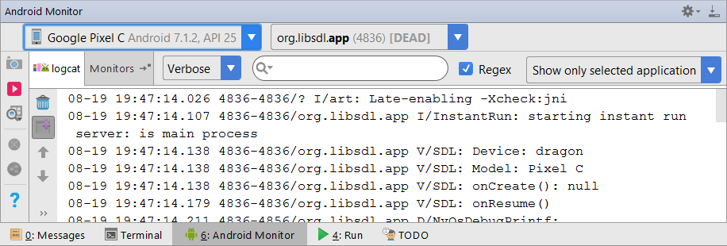
The Android Monitor can also show you if there are any ADB errors.Now that you have SDL 2 running on your device, it's time to go onto part 2 of the tutorial.